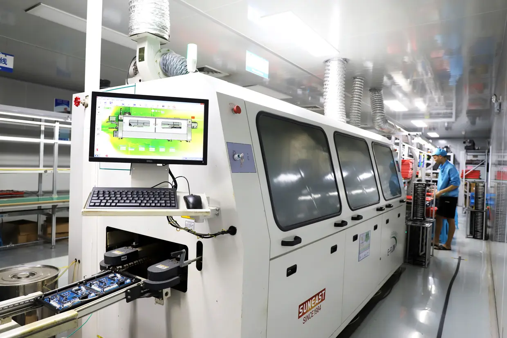
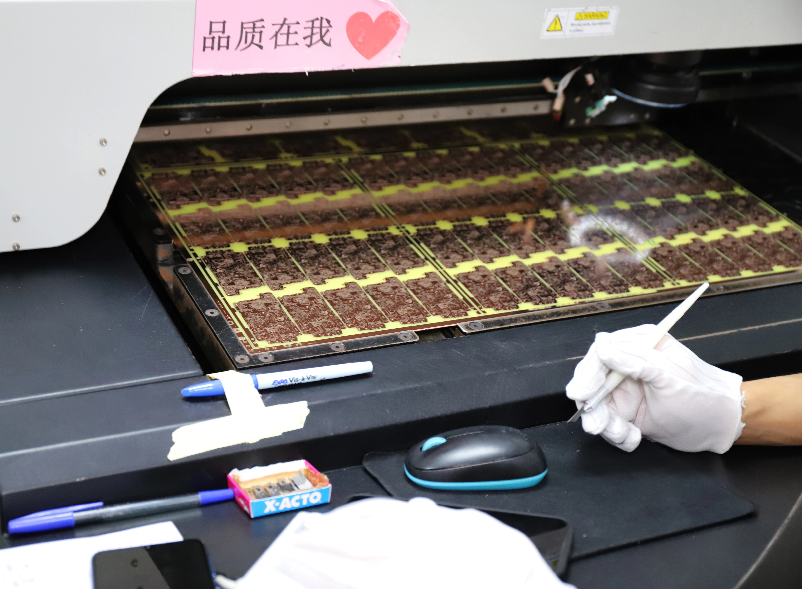
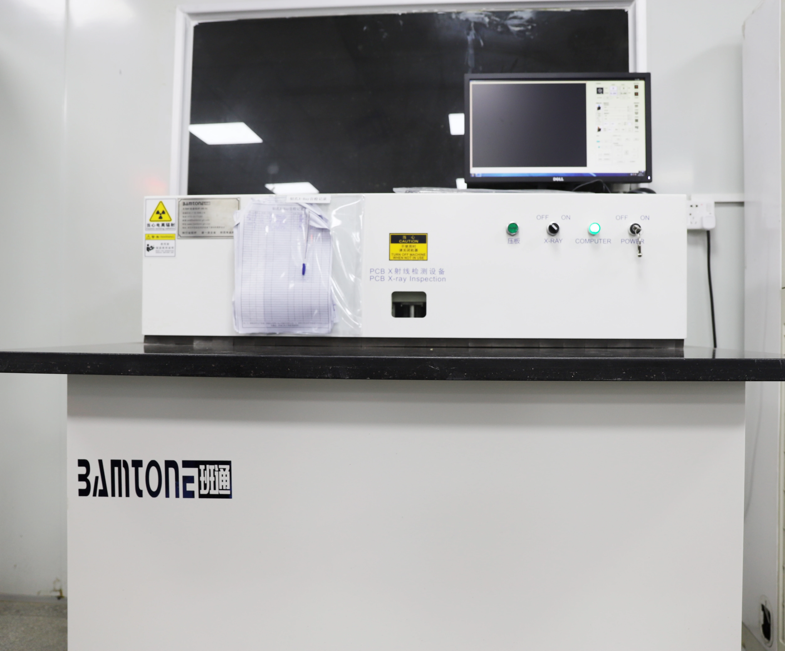
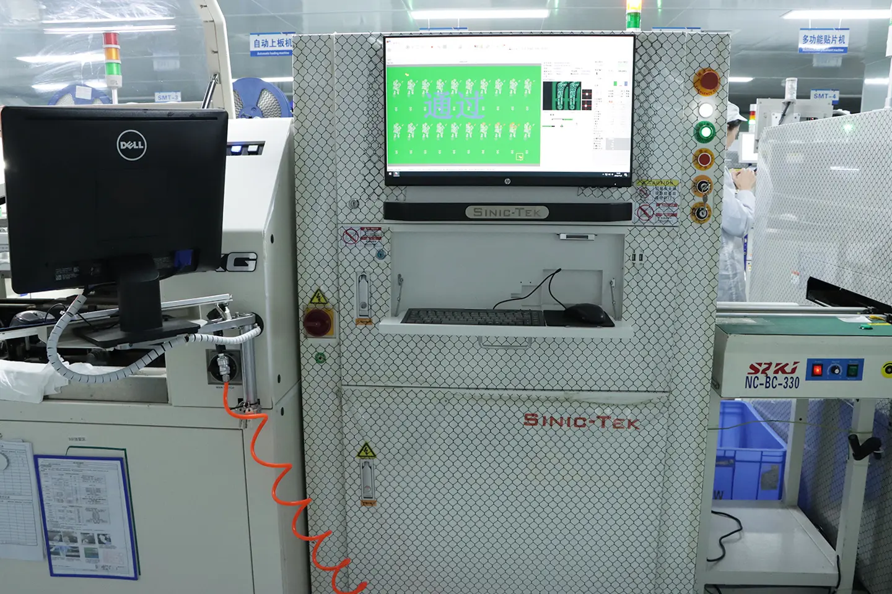
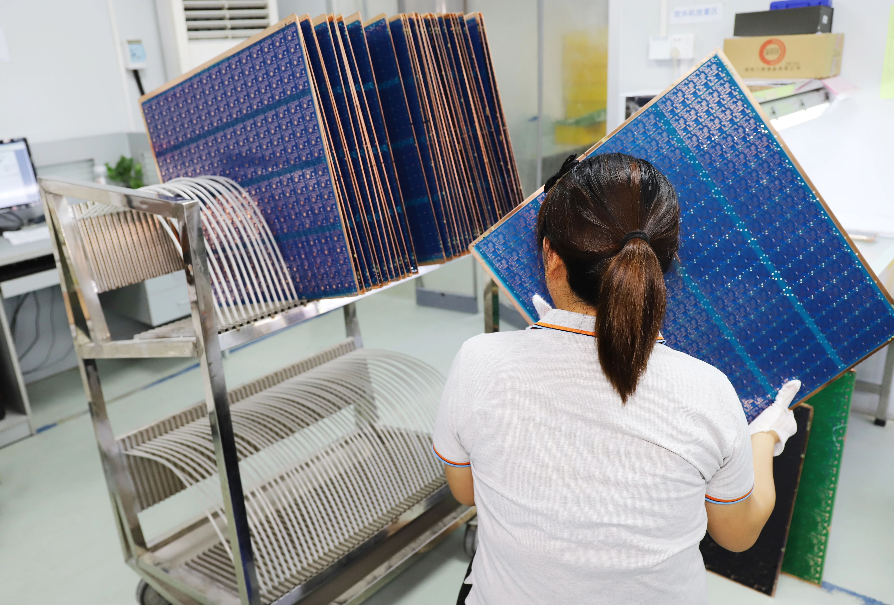

Fabricação de PCB
PCB de 1–40 CamadasDe protótipos simples a placas multicamadas complexas.
- 1–40 Camadas
- Multicamadas
- HDI
- Rigid-Flex
- FPC
- Protótipo e Produção
Da fabricação de PCB e montagem SMT ao sourcing de componentes, a LZJPCB oferece suporte completo para empresas de eletrônicos em todo o mundo.
Solicitar CotaçãoEnviar Gerber / BOMTem arquivos Gerber ou uma BOM? Envie para nossa equipe para uma avaliação de fabricação.
Um parceiro para fabricação de PCB, montagem e sourcing de componentes.
De protótipos simples a placas multicamadas complexas.

Montagem SMT, THT, sourcing de componentes, inspeção e suporte à produção.

Suporte para revisão de BOM, sourcing e produção.
PCB, componentes e montagem em fornecedores diferentes.
Problemas de design são descobertos tarde demais.
Peças podem ficar difíceis de encontrar ou ter prazos variáveis.
Passar do protótipo para produção pode ser complexo.
Integramos PCB, PCBA e sourcing em um único fluxo de fabricação.
Discutir Seu Projeto →Suporte de produção da fabricação de PCB à montagem PCBA.
Placas multicamadas padrão e complexas.
Suporte para interconexão de alta densidade.
Fabricação de placas flexíveis e rigid-flex.
Caminho escalável para produção em volume.
Suporte além da simples fabricação das placas.
Feedback de fabricação antes da produção.
Revisão de componentes e requisitos de sourcing.
Suporte a decisões orientadas à produção.
Caminho de fabricação escalável.
Opções de produção para diferentes necessidades de sourcing e cadeia de suprimentos.
Do engineering review à inspeção final, a qualidade faz parte do processo.
As certificações devem ser verificadas e substituídas por informações oficiais antes do lançamento.
Suporte PCB e PCBA para sistemas de controle industrial.
Produção para produtos eletrônicos conectados.
Montagem e produção para eletrônicos de robótica.
Suporte para aplicações eletrônicas exigentes.
Do protótipo à produção.
PCB e montagem para aplicações automotivas.
Protótipo • Produção Piloto • Produção em Volume
Substitua os placeholders por fotos reais verificadas das fábricas na China e Indonésia.







